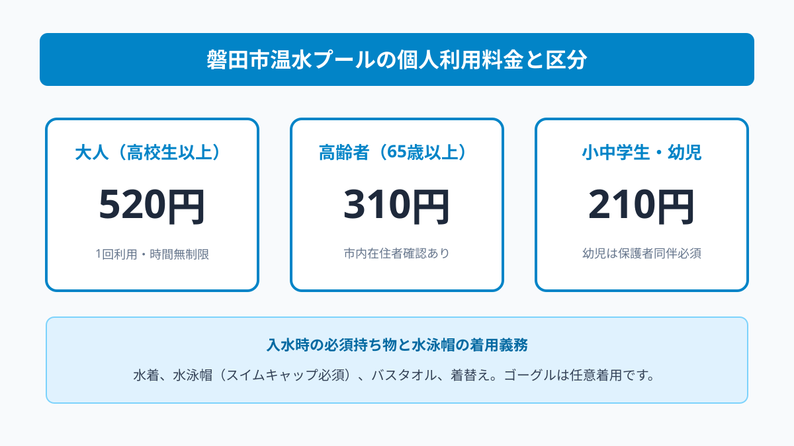
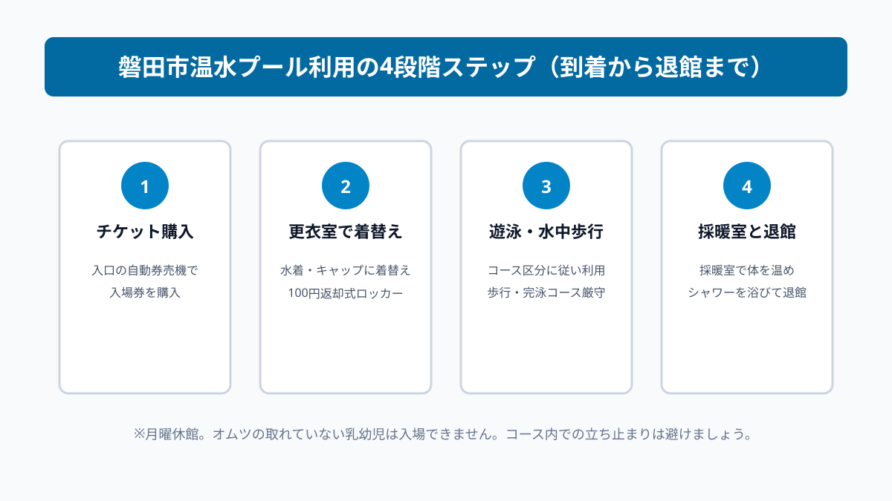

スポーツ・イベント
磐田市温水プール｜一般個人利用の時間と料金
この記事の要点
Q. 磐田市温水プールは、個人で予約なしに利用できる？
A. 大人1回520円、高齢者310円、小中学生210円で予約なしで個人利用が可能です。券売機でチケットを購入して入場します。水泳帽（スイムキャップ）の着用が必須となります。更衣室やコース利用ルールを整理します。
磐田市温水プールの基本概要と市民生活での活用法
静岡県磐田市御厨に位置する「磐田市温水プール」は、年間を通じて天候や外気温に一切左右されることなく、快適にスイミングや水中ウォーキングを楽しめる公営の屋内温水プール施設です。市民の健康維持、生活習慣病の予防、そして日々の体力づくりの頼もしい拠点として長年親しまれており、育ち盛りの子どもから健康長寿を目指すシニア世代まで、幅広い年齢層の市民が日常的に利用しています。
民間のフィットネスクラブや民間のスイミングスクールに入会しようとすると、入会金や事務手数料に加え、毎月数千円から1万円以上の固定月会費が重い負担としてのしかかります。仕事や家庭の用事で忙しくて通えない月があっても会費は口座から引き落とされ続けるため、定期的に通える確証がない段階では契約を躊躇してしまう市民の方も少なくありません。その点、公営の磐田市温水プールは都度払いの個人利用に対応しており、行きたいときに自分のペースで1回単位で手頃に利用できるのが最大の強みです。
しかし、公営の温水プールと聞くと「利用料金や営業時間はどうなっているのか」「何を持参すればよいのか」「事前の予約や講習会の受講が必要なのか」「コースの利用区分や泳ぎのルールは厳しいのか」など、初めて訪れる方にとっては気になる疑問や不安がいくつもあるはずです。事前の情報がないと、せっかく健康づくりの意欲があっても最初の一歩を踏み出しにくくなってしまいます。
結論からお伝えしますと、磐田市温水プールは事前予約や煩わしい会員登録などは一切不要で、開館時間内に直接現地を訪れて入口の自動券売機でチケットを購入するだけで、誰でも当日その場ですぐに入場して利用できます。利用料金は一般大人1回520円、小中学生210円、65歳以上の高齢者は310円と、民間施設に比べて極めて手頃な市民安心価格に設定されています。
この記事では、磐田市公式ウェブサイトの公表資料および現地案内板の利用規定を手がかりに、25mプールのコース構成、営業時間と休館日、水泳帽（スイムキャップ）着用などの必須ルール、更衣室や温水シャワー、採暖室・ジャグジーの設備状況、そして混雑を避けて快適に利用するための具体的な段取りまでを、実務家の生活目線で分かりやすく整理します。運動習慣を始めたい市民の皆様の参考になれば幸いです。

磐田市公式ウェブサイトの施設案内によると、磐田市温水プールの開館時間は、平日および土曜日が午前9時から午後8時30分（最終入館は午後8時、遊泳終了時間は午後8時15分）までとなっています。仕事帰りに立ち寄るにも十分な時間帯まで営業しています。ただし、日曜日および国民の祝日は午前9時から午後5時（最終入館は午後4時30分、遊泳終了時間は午後4時45分）までと、夕方に閉館時間が繰り上がるため注意が必要です。
休館日は原則として毎週月曜日（月曜日が国民の祝日にあたる場合はその翌平日）および年末年始（12月29日から1月3日）です。また、これらに加えて施設の定期保守点検やプール槽の水抜き清掃作業に伴う臨時休館日が年に数回設定されます。せっかく訪れて休館だったという事態を避けるためにも、お出かけ前には磐田市公式ウェブサイトや施設のお知らせ掲示を念のため確認しておくことが賢明です。
館内のプール設備を確認すると、メインとなる日本水泳連盟公認の25mプール（全6コース、水深1.1m〜1.3m）をはじめ、小さな子どもでも足がつく水深の浅い幼児・児童用プール（水深約0.6m）、運動後の冷えた身体を心地よく温め直す気泡浴ジャグジー、そして遠赤外線ヒーターを備えた採暖室が完備されています。室温と水温は年間を通じて30度前後の快適な温度に厳格管理されており、真冬の寒い日であっても寒さを感じることなく快適に入水できます。
25mプールの各レーンは、利用者の泳力や運動目的に応じて明確にコース分けがなされています。「完泳コース（途中で足をつかずに一定のペースで泳ぎ続ける一方通行レーン）」「練習コース（途中で立ち止まりながら息を整えて泳げるレーン）」「水中歩行専用コース（ウォーキングに専念できるレーン）」「自由遊泳コース」に区分されており、速く泳ぎたい本格的なスイマーと、腰痛改善やリハビリのために水中ウォーキングを楽しみたいシニア世代が、互いに接触することなく安全に同じ空間を利用できるようきめ細かな配慮がなされています。
利用にあたって最も重要なルールが、「水泳帽（スイムキャップ）の完全着用義務」です。水泳帽を着用していない場合は、いかなる理由があってもプール槽に入水することはできません。髪の毛の抜け毛による水質悪化や排水口の詰まりを防ぐための公衆衛生上の絶対ルールです。もし持参を忘れてしまった場合は受付窓口で実費購入することも可能ですが、余分な出費を防ぐためにも必ず自宅を出る前に水泳帽をカバンに入れたか指差確認してください。

公認資料の利用条件を、磐田市民の日常的な生活導線や健康維持の計画に当てはめて考えてみましょう。磐田市温水プールはJR御厨駅から車で約4分、東名高速道路や主要幹線道路からもアクセスしやすい御厨地区の閑静なエリアに位置しています。施設正面および周辺には広々とした無料駐車場が完備されており、車社会の磐田市において駐車場所に困る心配はほとんどありません。
平日の夜8時30分まで開館しているため、磐田市内の事業所や近隣の自動車・楽器関連工場等で働く会社員が、退社後にスーツや作業着から水着に着替えて30分〜1時間ほど爽快にひと泳ぎするという生活サイクルが極めて自然に定着します。夜間の暗い屋外道路を走る防犯上の不安や、冬の凍てつく寒風・夏の猛烈な熱帯夜に悩まされることなく、空調の行き届いた快適な室内で天候に左右されずに有酸素運動を継続できます。
水中運動の最大の利点は、水の「浮力」によって関節への負担が劇的に軽減される点にあります。陸上でウォーキングやジョギングを行うと、着地の瞬間に体重の3〜5倍もの衝撃が膝や腰、股関節にかかりますが、水中に胸まで浸かると浮力によって体重負荷は約10分の1にまで軽くなります。そのため、体重の増加が気になる方や、腰痛・膝痛を抱えているシニア世代であっても、関節を痛めるリスクなしに全身の筋肉をしっかりと動かし、高いカロリー消費と心肺機能の強化を実現できます。
また、平日の午前中から午後の早い時間帯にかけては、地域のシニア世代にとって無理のない体力維持と仲間との交流の場として大変賑わっています。歩行専用レーンで自分の歩幅に合わせて腕を振りながら歩くだけでも、水圧によるマッサージ効果と適度な負荷が加わり、下半身の筋力強化とむくみ解消に絶大な効果を発揮します。運動後には温かいジャグジーや採暖室でリラックスしながら一息つけるため、心身ともに充実した時間を過ごせます。
利用料金に関しても、一般大人520円、高齢者310円という設定は、民間のフィットネスクラブのビジター利用料金（2,000円〜3,000円）と比較して圧倒的なコストパフォーマンスを誇ります。さらに頻繁に通う市民向けには11回分が綴られたお得な回数券も販売されており、実質1回あたりの負担額をさらに抑えて経済的に健康習慣を継続することが可能です。
利用者の視点から見た客観的評価｜良い点・注文したい点・対案・結論
磐田市温水プールについて、市民生活者の視点から客観的に評価してみましょう。まずは良い点です。
良い点は、何よりも「徹底された水質管理と施設全体の清潔感」です。公共のプール施設にありがちな鼻をつく強烈な塩素臭や水の濁りが非常に少なく、透き通った澄んだ水の中で気持ちよく泳ぐことができます。ろ過循環システムが適切に稼働しており、水底のラインまでくっきりと見渡せる視界の良さは、泳ぎに集中する上で大きな快適さをもたらしています。
また、更衣室や温水シャワー、採暖室などの付帯設備が清潔に保たれている点も高く評価できます。更衣室のロッカーは100円硬貨返却式で鍵の紛失防止に配慮されており、個室の温水シャワーブースも複数完備されています。プールの後にしっかりと温かいシャワーで体を洗い流し、身支度を整えてそのまま爽やかな気分で帰宅できる導線が確立されています。
さらに、プールサイドの監視体制が極めて真面目で厳格である点も、利用者に大きな安心感を与えています。専任の救助・監視スタッフが常に高い監視台およびプールサイドから目を光らせており、コースルールの逸脱や体調不良者の早期発見に努めています。万一の溺水や接触事故を未然に防ぐプロの体制が整っていることは、公共施設として信頼に値する要素です。
一方で、利用者の視点から注文したい点も率直に挙げておきます。
注文したい点は、「日曜日・祝日の閉館時間が午後5時と早い点」です。平日に仕事で多忙を極める現役世代にとって、日曜日の夕方以降にゆっくりと時間を取ってプールで泳ぎたいというニーズは根強くあります。休館日である月曜日の前日とはいえ、せめて午後7時頃まで営業枠を拡大していただければ、より多くの働く市民が週末の健康管理に活用できるようになると感じます。
また、衛生管理の観点から「オムツ（水遊び用オムツを含む）が完全に取れていない乳幼児は入場不可」という利用基準が定められているため、未就学の小さなお子様がいる若い子育て世帯にとっては、家族全員でプールレジャーを楽しむ場所としての利用に制限がある点も理解しておく必要があります。
これらの特徴を踏まえた上で、市民がストレスなく温水プールを活用するための対案・結論として、「3つの賢い使い分けルール」を提案します。
第1のルールは、「平日の午前11時〜午後2時の昼下がり、または夜19時以降のラスト1時間を狙う」ことです。平日の開館直後（午前9時〜10時台）はシニア層の水中歩行グループで賑わい、夕方（16時〜18時台）はジュニア水泳教室等の団体利用でコースの一部が専用使用されることがありますが、昼下がりの時間帯や夜間の遅い時間帯は比較的コースに余裕があり、自分の好みのペースで伸び伸びと泳ぐことができます。
第2のルールは、「水泳用具一式を専用メッシュバッグにまとめて常時車載しておく」ことです。水着、水泳帽、スイミングゴーグル、吸水速乾セームタオル、替えの下着、ロッカー用の100円硬貨を防水バッグにひとまとめにして車のトランクや職場ロッカーに常備しておけば、仕事が早く終わった日や気分転換したいときに、思い立った瞬間に迷わずプールへ直行できます。
第3のルールは、「コースの利用区分を正しく守り、前後の泳者と適切な車間距離を保つ」ことです。完泳コースでは前の泳者を無理に追い越そうとせず、ターンの壁際では速やかに進路を譲る配慮が事故防止の鉄則です。自分のその日の体調や泳力に見合ったレーン（歩行レーン、練習レーンなど）を柔軟に選択することが、周囲と気持ちよく共存するための最大の知恵となります。
大石の視点と、初回利用時の確認手順
事前の準備と時間帯の工夫を少し意識するだけで、公営温水プールは日々の生活の質を劇的に向上させる強力な健康パートナーになります。
- 持ち物の準備：水着、水泳帽（キャップ必須）、バスタオル、ロッカー用小銭を用意。
- 券売機でチケット購入：エントランスの自動券売機で個人利用券を購入。
- 更衣室で着替え：ロッカーに荷物を預け、水着と水泳帽を着用する。
- シャワーを浴びて入水：整髪料や化粧をしっかり落とし、コース区分を確認して入水。
- 遊泳と水中ウォーキング：完泳・歩行レーンのルールを守り安全に運動。
- 採暖室と退館：ジャグジーや採暖室で体を温め、シャワーを浴びて退館。
実際に磐田市温水プールを利用する当日は、以下の手順に沿って行動すると極めて円滑に入館から退館まで進めることができます。
エントランスホールの受付窓口のスタッフは利用手順を親切に案内してくれます。初めての来館で不安がある場合は、「初めて利用します」と一声かければ、券売機の操作方法から更衣室への順路、ロッカーの使い方まで丁寧に説明してもらえます。
温水プールは多くの市民が共有する神聖な健康づくりの場です。全員が清潔かつ気持ちよく利用するために、押さえておきたいマナーがあります。
第1に、「入水前の全身シャワーと洗髪・メイク落とし」の徹底です。整髪料や化粧品、日焼け止め、皮脂や汗がついたままプールに入水すると、水質が急速に濁り、他の利用者に不快感を与えるだけでなく塩素の消費を早めてしまいます。更衣室からプールサイドに出る前のシャワーブースで、石鹸やシャンプーを用いて頭からつま先までしっかりと洗い流すのが最低限のエチケットです。
第2に、「コース内での急な立ち止まりや談笑の回避」です。完泳コースの中央で突然立ち止まったり、レーンロープに寄りかかって長時間おしゃべりをしていると、後ろから泳いできた人と接触して思わぬ怪我を招きます。休憩を取る場合はコースの隅に寄り、他の利用者の進行方向を塞がないよう配慮しましょう。
第3に、「プールサイドでの歩行厳守と転倒防止」です。プールサイドの床面は水滴で濡れており、どんなに滑り止め加工が施されていても大変滑りやすくなっています。急いでいるときでも絶対に走らず、足元を確かめながらゆっくりと慎重に歩いて移動してください。特に小さなお子様を同伴している保護者の方は、目を離さず手をつないで歩くよう徹底してください。
静岡県磐田市で不動産と介護の事業を営み、日頃から地域住民の暮らしや高齢期の健康課題に向き合う立場から見ると、身近な生活圏内に誰でも手軽に利用できる公営温水プールが存在することは、地域の福祉と健康寿命延伸における極めて貴重な社会的インフラだと実感します。
生活習慣病の予防や要介護状態への移行を防ぐ上で、水泳や水中運動は心肺機能を高め、全身のインナーマッスルを無理なく鍛え上げる理想的な運動療法です。特に年齢を重ねるにつれて膝や股関節に変形や痛みを抱える高齢者の方々にとって、陸上でのウォーキングは痛みが伴って辛いものであっても、水の浮力に支えられた水中であれば、痛みを忘れて驚くほど軽やかに足を前に運ぶことができます。
「最近足腰が弱ってきた」「階段の昇り降りが億劫になった」と感じているシニア世代の方にこそ、御厨の温水プールでの水中ウォーキングを心からおすすめしたいと考えています。週に1回でも2回でも、温かい水の中で腕を大きく振り、浮力に身を委ねて足を動かすだけで、関節の可動域が劇的に広がり、夜間の睡眠の質や食欲、日々の気力が驚くほど前向きに回復していきます。
どんなに立派な温水プール施設が税金で整備されていても、市民が日常の暮らしの中で積極的に使いこなさなければ、その価値は半減してしまいます。民間ジムのような数万円の入会金や毎月の固定費を支払わなくても、1回520円（シニア310円）という小銭のコイン数枚で手に入る健康への投資を、ぜひご自身の生活習慣として最大限に活用していただきたいのです。
自分自身の心と身体を健やかに保ち続けることは、将来の自分への投資であると同時に、医療費や介護の心配を減らし、家族に対する何よりの愛情表現でもあります。御厨の温水プールへ足を運び、水と触れ合う心地よいひとときを、日々の豊かな生活習慣の一部として取り入れてみてください。
日々の仕事や家事、介護などの多忙な用事に追われていると、自分自身の運動や健康管理はどうしても後回しになりがちです。しかし、疲れを感じていたり気分が落ち込みがちなときこそ、思い切って温水プールに飛び込み、無心で水中に身体を漂わせていると、頭の中の雑念や日頃のストレスが綺麗さっぱりと洗い流されていくのを実感できます。
磐田市温水プールは、市民一人ひとりの心身の健康と明るい暮らしを支えるために整備された、私たち市民みんなの共有財産です。敷居の高さを感じて遠巻きに見つめるのではなく、自分たちの生活をより豊かで活力あるものにするための身近な道具として、遠慮なくどんどん使い倒していただきたいと願っています。
温かく澄んだ水の中で手足を力いっぱいに伸ばし、深い呼吸を繰り返すそのひとときが、明日からの活力と健やかで笑顔あふれる磐田ライフを力強く支えてくれます。
磐田市温水プール（御厨）は、予約不要・都度払いで大人520円、高齢者310円、小中学生210円で誰でも気軽に利用できる公営の屋内温水プールです。
年間30度前後の水温で管理された25mプール、水中歩行専用レーン、幼児プール、採暖室・温水ジャグジー、無料駐車場が整っており、多世代の健康づくりに最適です。
水泳帽の着用義務と入水前のシャワーマナーを守り、身近な公共プールを賢く活用して、健康的でアクティブな磐田ライフをお楽しみください。
- 磐田市温水プールは予約不要、大人520円・高齢者310円・小中学生210円で利用可能。
- 25mコース、水中歩行専用レーン、幼児プール、採暖室・温水ジャグジー完備。
- 水泳帽の着用が必須、入水前のシャワーマナーを守り快適に健康増進を推進。
参考にした公式情報
- 温水プール／磐田市（2026年9月12日確認）
- スポーツ施設一覧／磐田市（2026年9月12日確認）
最終確認日：2026-09-12 ／ 本記事は公表情報と執筆者の見解を分けて記載しています。制度・数値・公開状況は変更される場合があるため、最新情報は磐田市公式ページでご確認ください。